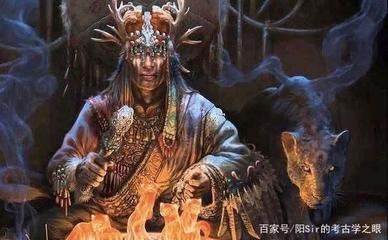
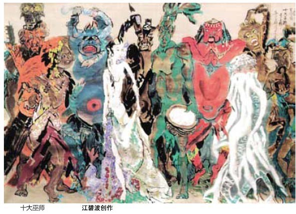

《山海经》有一部分内容直接来源于各地的巫书，书中多处记载了巫师的活动。 巫师的主要职责是负责沟通人和鬼神。起初，巫师更像是一种博学多才的族内高级成员，仍然参与生产劳作，比普通人懂得更多的天文、地理、医学、农业的知识。 而在《山海经》的记载中，巫师从生产劳动中脱离出去，成为一个独立的高级阶层。在巫风盛行的时代，巫师的职能很大，在沟通人神之外，还负责采集草药为人治病、利用巫术求雨等。
《大荒西经》中记载：「有灵山，巫成、巫即、巫勝巫彭、巫姑、巫真、巫礼、巫抵、巫谢、巫罗十巫，从此升降，百药爱在。」这也是古老的灵山十巫的传说。 古人将采药与巫术结合在一起，认为山间百草都是神灵所降，巫和医合二为ー，作为一种仙兆。这也是中国古代最早的采集草治疗疾病的记录，同时在一些看法中，「巫咸」、「巫彭」也被认为是传说中古代医道的创始者。
出自《山海经·大荒西经》。 "大荒之中有山，名曰丰沮玉门，日月所入。有灵山，巫咸、巫即、巫朌、巫彭、巫姑、巫真、巫礼、巫抵、巫谢、巫罗十巫从此升降，百药爰在。"郭璞注:"群巫上下此山采之也。"按灵山为山之天梯。"十巫从此升降"，谓"上下于天"、宣神旨、达民情;采药当为其余事。
【译文】有座灵山，巫咸、巫即、巫朌、巫彭、巫姑、巫真、巫礼、巫抵、巫谢、巫罗等十个巫师，从这座山升到天上和下到世间，各种各样的药物就生长在这里。